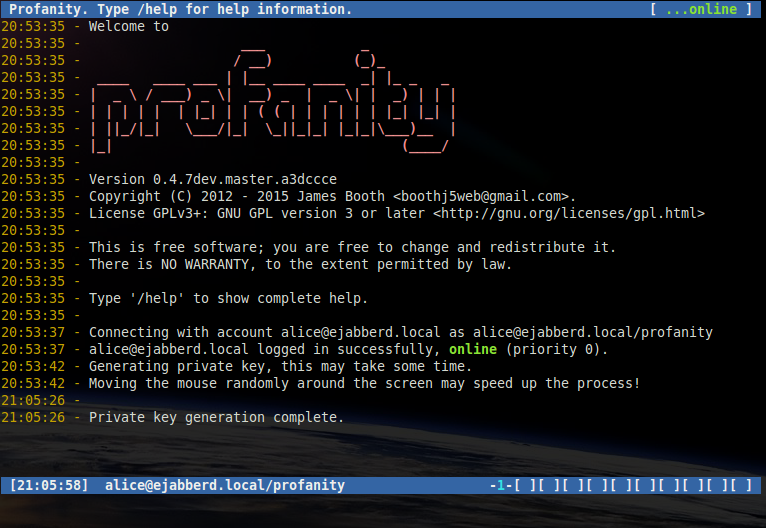
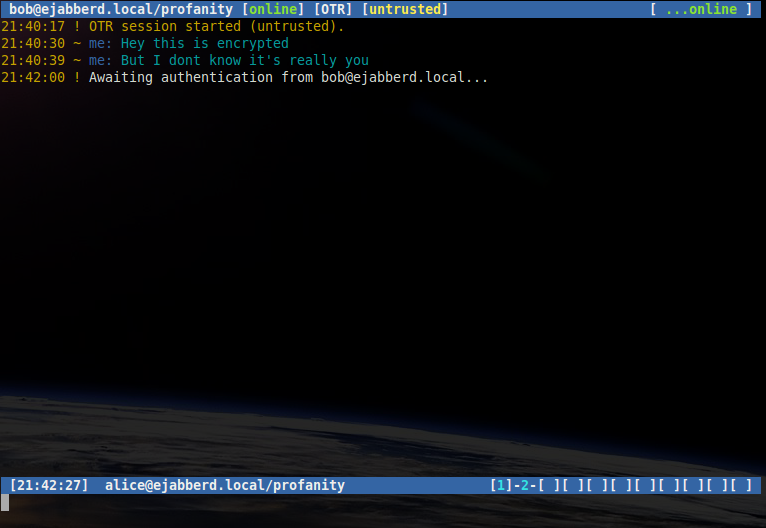
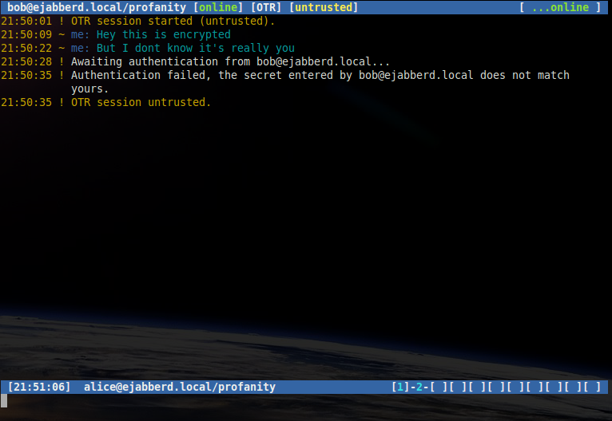
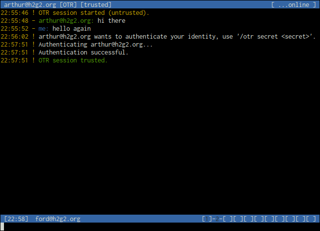

Contents
Building with OTR support
Off The Record (OTR) messaging is a form of secure messaging, it includes encryption, authentication between users, deniability and perfect forward secrecy.
An overview and many useful resources can be found at the OTR site.
If you have libotr-dev installed, support will be included by default. To force the build to fail if support cannot be included, configure with the following:
./configure --enable-otr
Supported libotr versions are 3.2.x, and 4.0.x.
On most distributions there is simply a libotr-dev package you need to install first.
On Mac OS X, the brew formula will automatically install the dependency and compile with OTR support.
On Cygwin you will need to install the libgcrypt-devel package first. Secondly you will need libotr-devel package which is not currently in the official repositories. You can install it from the Cygwin Ports project.
Generating a private key
Before you can start using OTR for a particular account, you must generate a private key. Use the following command:
/otr genA message will appear informing you that the key is being generated which may take a few minutes.
Once you have generated a key, you will not need to do so again.
Starting a private conversation
Once you have a private key, you may start OTR encrypted sessions with other contacts who have OTR enabled.
To start a new conversation using OTR encryption:
/otr start bob@ejabberd.localIf you are already in a conversation window without OTR, you can start sending encrypted messages with the same command omitting the contact:
/otr start
The [untrusted] shown in the titlebar indicates that although this conversation is encrypted, the contact has not yet been authenticated.
Authenticating a contact
The previous conversations were encrypted, however as the recipient noticed, neither user can be certain of the identity of the other.
Authentication is for each OTR key that the contact may have generated. For example if your contact has different OTR keys on different devices, you will need to authenticate each device separately.
Once a particular contact (and client) has been authenticated, this information is saved.
OTR supports three ways to authenticate a contact, question and answer, shared secret, and manual fingerprint verification.
Question and answer
Question and answer verification allows one user to verify the identity of another by asking a question with an expected answer.
Once in an OTR session, a user may ask the recipient a question supplying their expect answer, for example if Alice wishes to authenticate Bob:
/otr question "What is the name of your best friends rabbit?" fiffiA message will be displayed showing that the authentication process has started.
If Bob answers correctly a message will be shown indicating that Bob is now trusted by Alice.

If Bob answers incorrectly a message will be shown indicating that Bob is not trusted by Alice.

Bob may also wish to authenticate Alice. If he does, Alice will receive a message showing Bob's question, and prompting her to answer. Alice may answer using the /otr answer command:
/otr answer redNote that question and answer authentication is a way for one contact to verify the identity of another. If the recipient answers correctly then the sender has authenticated them, however the recipient must also authenticate the sender with another question.
Shared secret
Shared secret verification is a way for both parties to authenticate each other at the same time using a shared passphrase that only the two of them know.
In an OTR session, one user may start shared secret authentication with the /otr secret command, supplying the secret, for example Alice initiates the authentication:
/otr secret 5up3r53cr3tBob enters the same secret using his client, Alice and Bob now trust each other.

If Bob started the shared secret authentication, Alice will receive a message asking her to enter the secret using the /otr secret command:
/otr secret 5up3r53cr3tManual fingerprint authentication
The above two methods allow you to verify the fingerprint of a contact's OTR key without having to know the fingerprint. The final method is to manually verify the fingerprint.
You should exchange fingerprints with your contact's via another secure communication channel. To display your fingerprint, use the following command:
/otr myfpTo view the fingerprint of a contact whilst in an OTR session, use the following command:
/otr theirfpIf the fingerprint you see matches the fingerprint you communicated via another means, you can manually authenticate the contact with the following command:
/otr trustYou can untrust a contact at anytime using the following command:
/otr untrustSetting OTR policy
By default, OTR sessions must be started manually using the /otr start command.
The policy may be set at three levels, global, per account, and per contact with the order of preference being the most specific first:
1 - Use the policy for the contact, if no setting found:
2 - Use the policy for the account, if no setting found:
3 - Use the global policy
The following three settings are available for each level:
manual - The default. Unencrypted messaging is allowed, OTR sessions must be started manually.
opportunistic - Upon sending an unencrypted message with the /msg command, profanity will attempt to start an OTR session with the contact. The contact's policy must be set to opportunistic or always for the session to start.
always - An error message will be displayed if you try to start a conversation without starting an OTR session and the message will not be sent.
Setting global policy
To set the global policy:
/otr policy <setting>The current global setting can be viewed with the following command:
/prefs otrSetting account policy
To set the policy for a particular account:
/account set <account_name> otr <setting>The account setting can be viewed with the following command:
/account show <account_name>Setting contact policy
To set the policy for a particular contact (you must be logged in):
/otr policy <setting> <contact>Contact policy settings can also be viewed with:
/account show <account_name>User Interface options
By default, an indicator is displayed in the titlebar when no encryption is being used (including PGP and OMEMO).
This indicator can be removed using the /encwarn command.
/encwarn off
Both incoming and outgoing plaintext messages are always preceeded by the '-' character.
By default OTR encrypted messages are preceeded by the '~' character.
This character can be changed using the /otr char command.
/otr char OOTR message logging
The /otr log command may be used with the following options to control if and how OTR messages are recorded in chat logs.
|
OTR messages will be logged in plaintext |
|
OTR messages will be logged, but the message will be replaced with the text '[redacted]'. |
|
OTR messages will not be logged. |
For the on and redact settings, chat logging must also be enabled with the /chlog command.